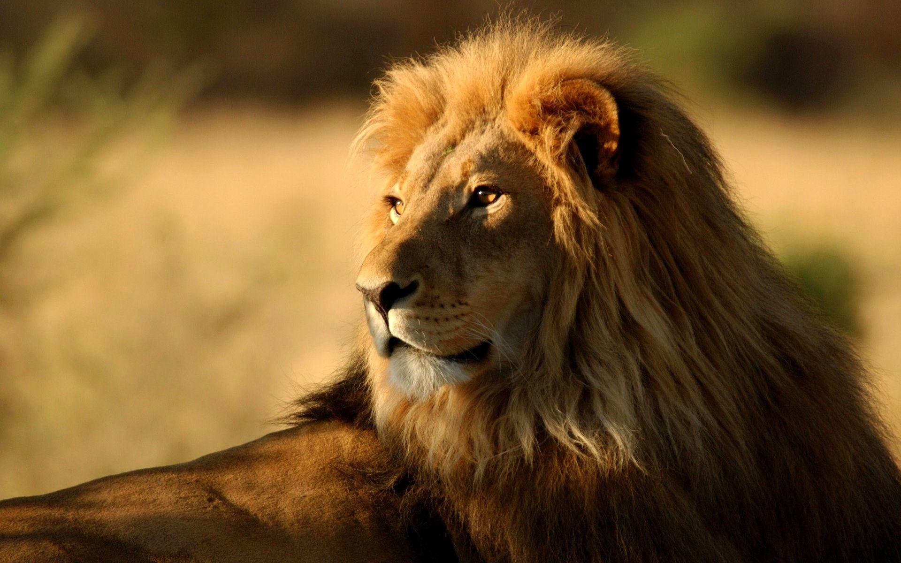
León
El león es un depredador poderoso que vive en manadas organizadas. Su rugido puede escucharse a kilómetros y es símbolo de fuerza y liderazgo en la naturaleza.
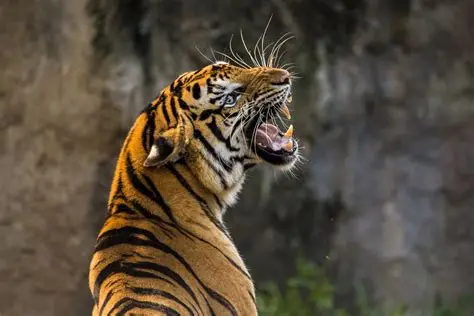
Tigre
El tigre es un cazador solitario, sigiloso y extremadamente fuerte. Su pelaje rayado lo hace único entre los grandes felinos y es uno de los depredadores más impresionantes del planeta.
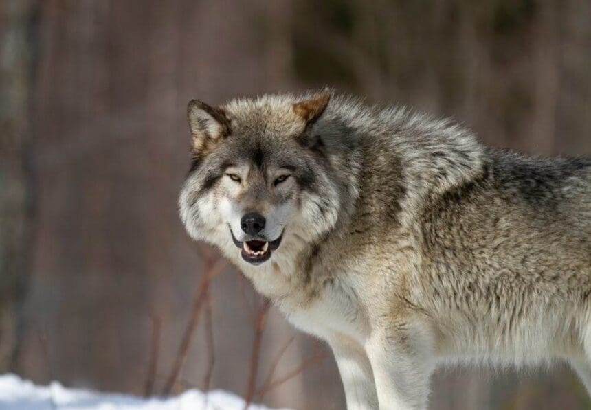
Lobo
El lobo es un animal inteligente, leal y profundamente social. Vive en manadas donde cada miembro cumple un rol importante. Es símbolo de libertad, unión y misterio.
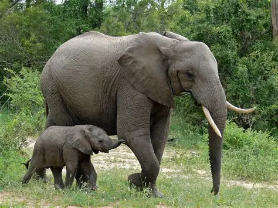
Elefante
El elefante es el mamífero terrestre más grande. Es muy inteligente, tiene excelente memoria y un fuerte sentido de familia. Se comunican con sonidos de baja frecuencia.
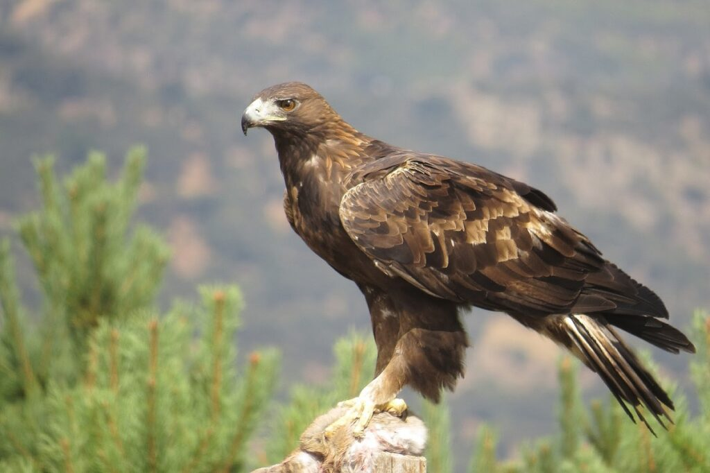
Águila
El águila es un ave de presa majestuosa, conocida por su aguda visión y su capacidad de vuelo. Es símbolo de libertad y poder en muchas culturas.
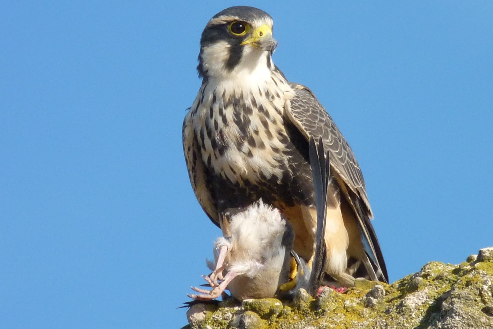
Halcón
El halcón es uno de los animales más rápidos del mundo. Su precisión al cazar lo convierte en un depredador aéreo impresionante.
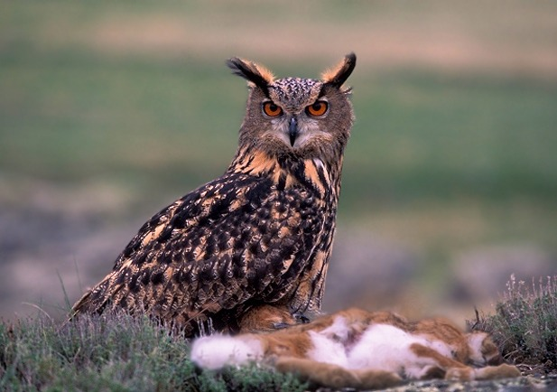
Búho
El búho es un ave nocturna con una visión excepcional en la oscuridad. Es símbolo de sabiduría y misterio, y se le asocia con la inteligencia y la intuición.
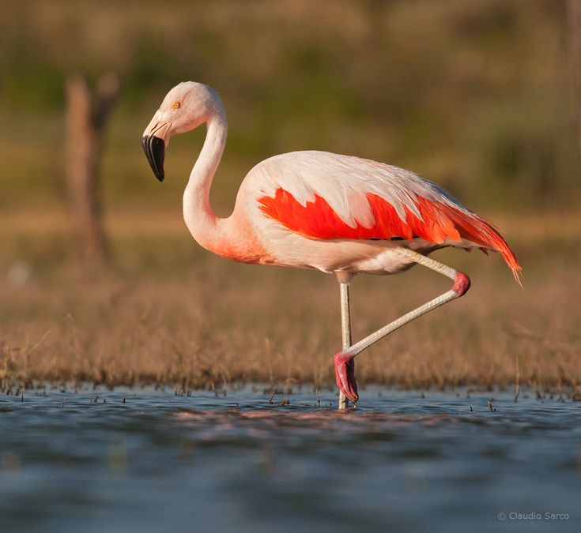
Flamenco
El flamenco es un ave elegante y colorida, conocida por su característico plumaje rosa y su comportamiento social. Se alimenta principalmente de pequeños crustáceos.
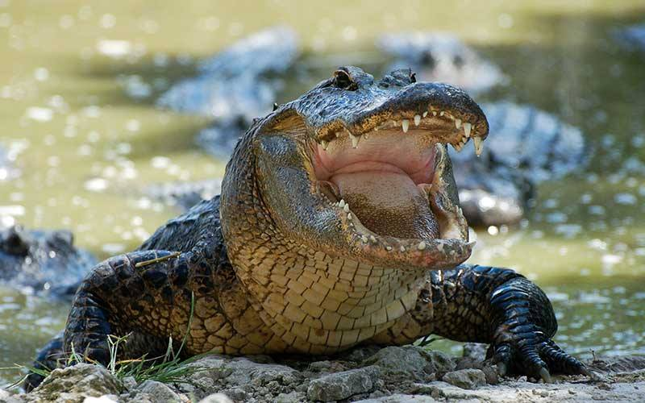
Cocodrilo
El cocodrilo es uno de los reptiles más antiguos del planeta. Es un cazador paciente que puede permanecer inmóvil durante horas antes de atacar con gran velocidad.
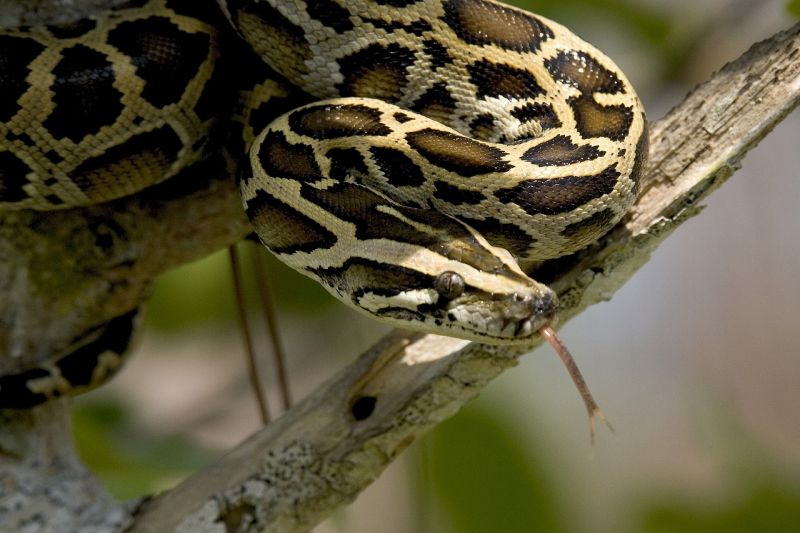
Pitón
La pitón es una serpiente constrictora que atrapa a sus presas envolviéndolas con su cuerpo. A pesar de su tamaño, suele ser tranquila y evita el conflicto.
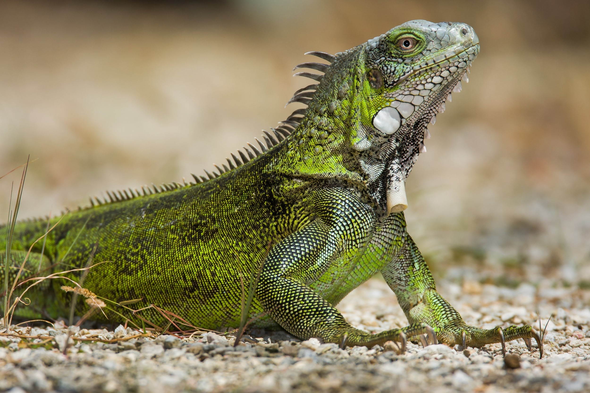
Iguana
La iguana es un reptil tranquilo que vive en zonas cálidas. Es excelente trepadora y puede cambiar ligeramente de color para regular su temperatura.
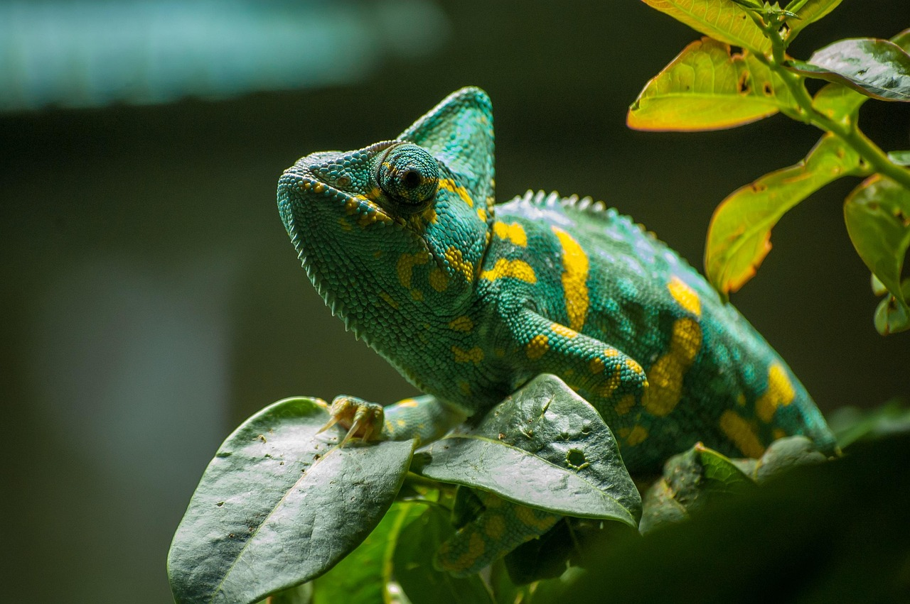
Camaleón
El camaleón es un reptil fascinante conocido por su capacidad de cambiar de color para camuflarse, comunicarse o regular su temperatura. Sus ojos pueden moverse de manera independiente, lo que le permite observar en dos direcciones al mismo tiempo. Es un trepador experto y vive principalmente en árboles.
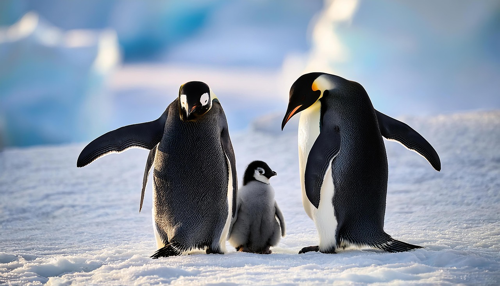
Pingüino
El pingüino es un ave que no vuela, pero es un nadador excelente. Vive en climas fríos y forma colonias muy organizadas.
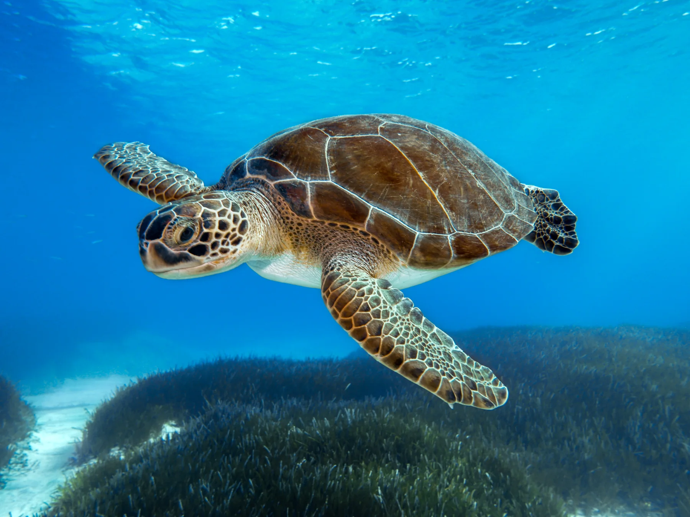
Tortuga Marina
La tortuga marina recorre miles de kilómetros en el océano. Las hembras siempre regresan a la misma playa donde nacieron para poner sus huevos.
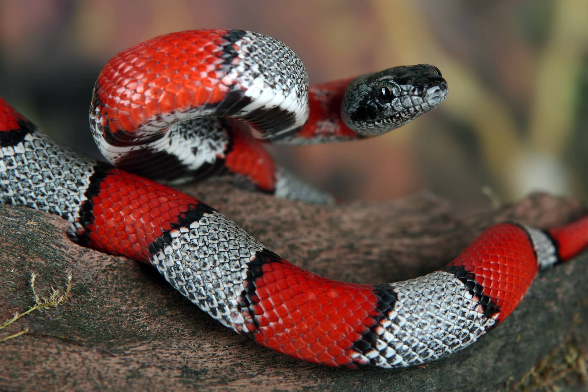
Serpiente Coral
La serpiente coral es un animal ovíparo conocido por sus colores brillantes en rojo, amarillo y negro. Vive en bosques y selvas, donde se esconde entre hojas y troncos. Es tímida y evita el contacto, pero su patrón llamativo advierte a los depredadores de su veneno. Pone sus huevos en nidos ocultos bajo tierra o entre la vegetación.

Avestruz
El avestruz es el ave más grande del mundo. Aunque no vuela, puede correr a gran velocidad y poner huevos gigantes.
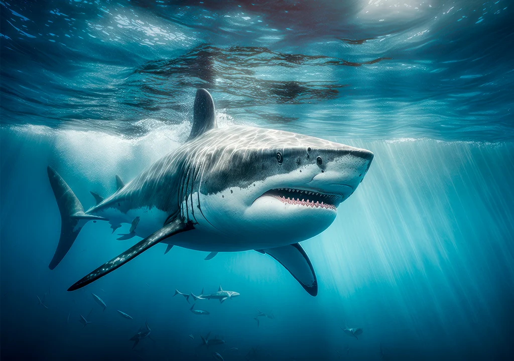
Tiburón
El tiburón es un depredador marino con sentidos muy desarrollados. Puede detectar vibraciones y olores a grandes distancias.
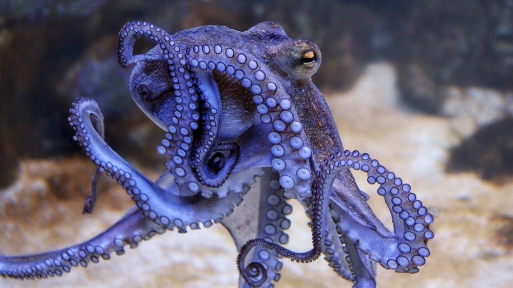
Pulpo
El pulpo es uno de los animales marinos más inteligentes. Tiene ocho brazos llenos de ventosas, puede cambiar de color y textura para camuflarse, y es capaz de resolver problemas complejos. Vive en cuevas submarinas y se desplaza con gran agilidad expulsando chorros de agua.
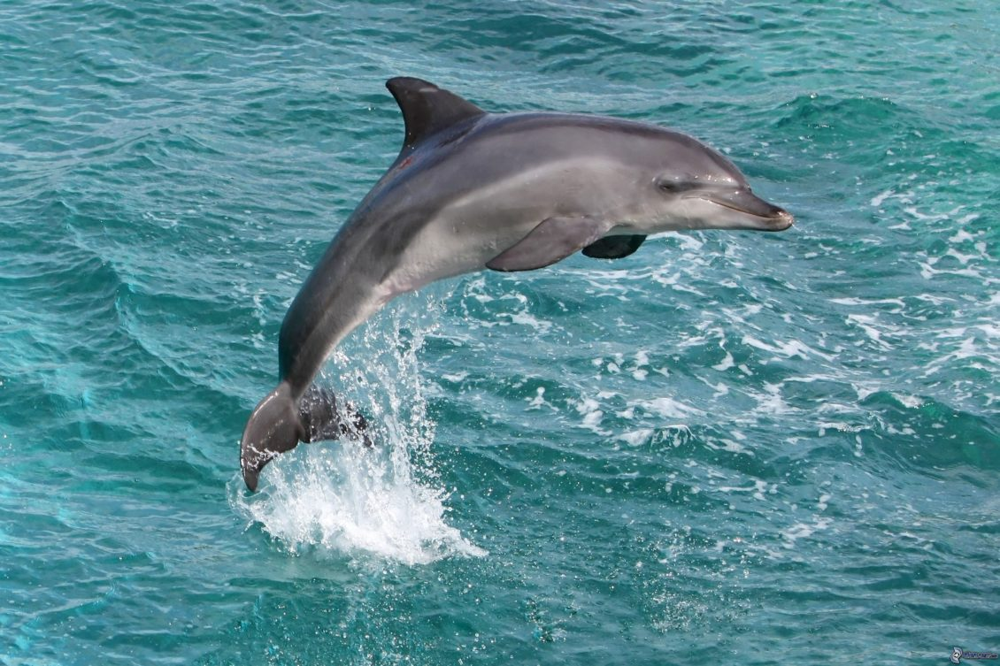
Delfín
El delfín es uno de los animales más inteligentes del océano. Vive en grupos sociales y se comunica mediante sonidos complejos.
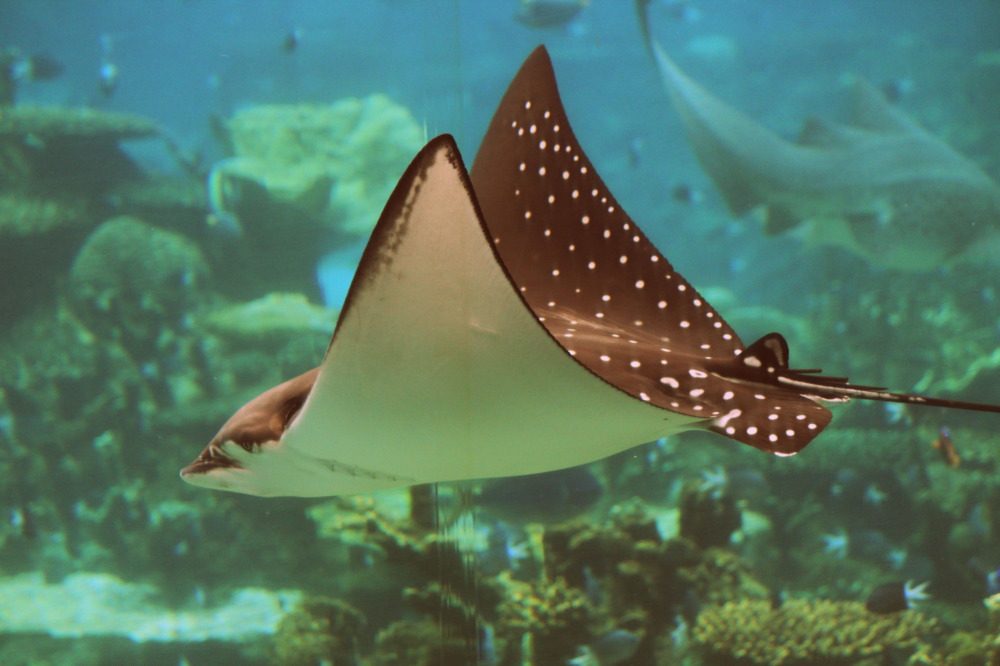
Manta Raya
La manta raya es elegante y tranquila. Nada con movimientos suaves y puede alcanzar tamaños impresionantes.